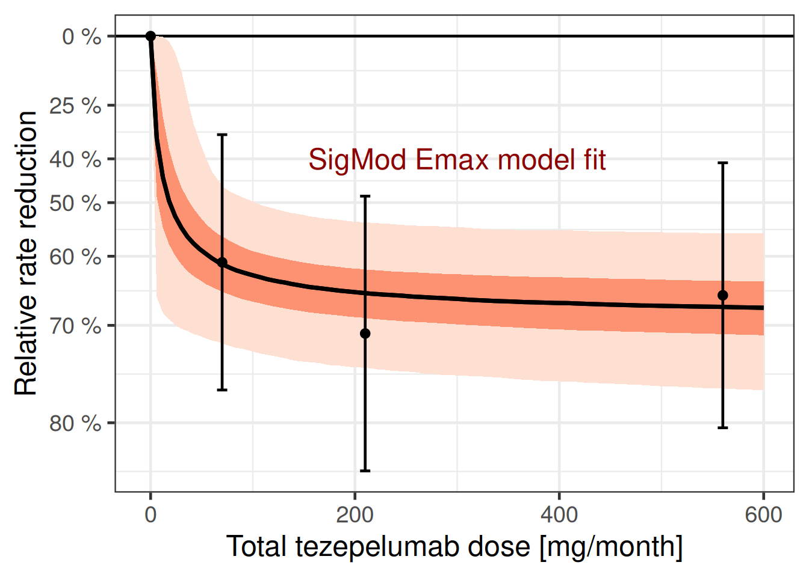
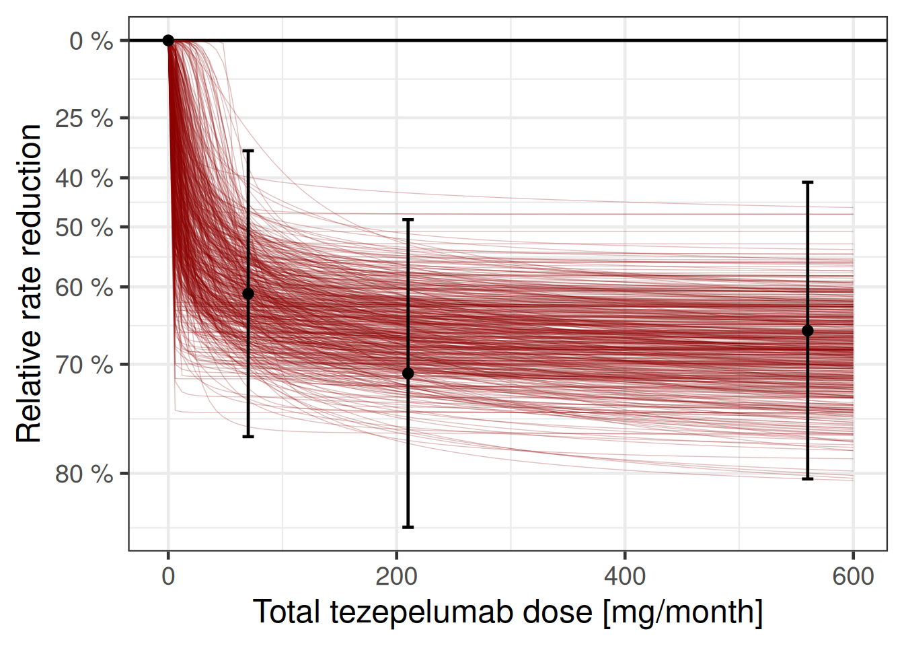
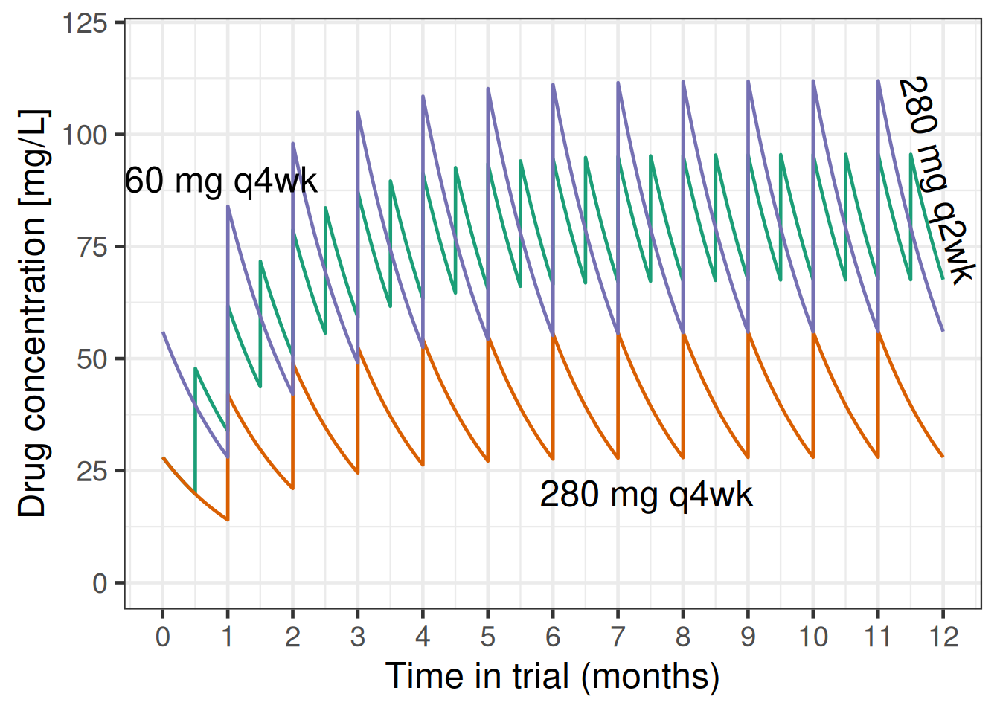

library(tidyverse)
library(brms)
library(tidybayes)
library(ggrepel)
library(patchwork)
library(here)
# instruct brms to use cmdstanr as backend and cache all Stan binaries
options(brms.backend="cmdstanr", cmdstanr_write_stan_file_dir=here("_brms-cache"))
# create cache directory if not yet available
dir.create(here("_brms-cache"), FALSE)
set.seed(8979476)8 Dose finding
8.1 Background
8.2 What role does dose response modeling play in drug development?
In clinical drug development, one key question is what dose of a drug should be used to treat a disease. Ideally, we would want a dose that achieves (nearly) optimal efficacy, while at the same time minimizing side effects to optimize the benefit-risk balance. In many therapeutic areas the relationship between dose and efficacy is characterized in Phase IIb clinical trials that randomize patients to received either one of several doses of a drug or a matching placebo.
In such studies, it would be inefficient to try a lot of doses and just look at the performance of each dose in isolation. Instead, we know that biologically there should be some smooth function that describes the relationship between dose and efficacy. We can exploit this knowledge to make the analysis of such studies more efficient. There are a number of methods for analyzing such trials that exploit that the true expected difference to placebo will follow some smooth function of the dose. However, we typically do not know what smooth function best approximates the true underlying dose response function. Obvious candidate functions include monotone functions that eventually plateau, and functions that initially achieve a maximum and then decline.
8.3 Data: PATHWAY asthma example
We will use the PATHWAY trial as an example. This was a placebo-controlled randomized trial of three different tezepelumab dosing regimens compared with placebo in severe asthma. Two of the tezepelumab dosing regimens were given every 4 weeks. We will treat the third regimen of 280 mg every 2 weeks as if it had been 560 mg every 4 weeks. The primary endpoint of PATHWAY was the annualized rate of asthma exacerbations. The plot below shows the published estimates with 95% confidence intervals per dose. Many standard dose response modeling approaches do not require access to individual patient data - which in this case is not publically available -, but can be conducted given estimates and standard error for each dose.
# This is the PATHWAY DRF data by group
pathway = tibble(dose = c(0, 70, 210, 280*2),
group = c("placebo", "tezepelumab 70 mg q4w",
"tezepelumab 210 mg q4w", "tezepelumab 280 mg q2w"),
est = log(c(0.67, 0.26, 0.19, 0.22)),
stderr = c(0.10304, 0.17689, 0.22217, 0.19108))
# Simple plot of the data
pathway %>%
ggplot(aes(x=dose, y=est, label=str_wrap(group, 12), col=group,
ymin=est-stderr*qnorm(0.975), ymax=est+stderr*qnorm(0.975))) +
geom_errorbar(width=10) +
geom_point() +
scale_y_continuous(breaks=log(seq(0.1,1,0.1)), labels=seq(0.1,1,0.1)) +
ylab("Annualized rate (95% CI)") +
xlab("Tezepelumab dose (mg/month)") +
geom_text_repel(nudge_x=c(25, 30, 60, -30), segment.color = NA)
Or to show this as rate ratios compared with the placebo group:
# This is the PATHWAY DRF log-rate-ratios vs. placebo
pathway_deltas = tibble(dose= c(0, 70, 210, 280*2),
group = c("reference level",
"tezepelumab 70 mg q4w vs. placebo",
"tezepelumab 210 mg q4w vs. placebo",
"tezepelumab 280 mg q2w vs. placebo"),
logRR= c(0,log(c(1-0.61, 1-0.71, 1-0.66))),
.lower90 = log(c(NA_real_, 1-0.75, 1-0.82, 1-0.79)), # Paper reports 90% CIs
.upper90 = log(c(NA_real_, 1-0.39, 1-0.53, 1-0.47)),
stderr = (.upper90-.lower90)/2/qnorm(0.95),
.lower = logRR-stderr*qnorm(0.975), # Get 95% CIs
.upper = logRR+stderr*qnorm(0.975))
# Plot log-rate ratios
pathway_deltas %>%
ggplot(aes(x=dose, y=logRR,
label=str_wrap(group, 12), col=group,
ymin=.lower, ymax=.upper)) +
geom_hline(yintercept=0) +
geom_errorbar(width=10) +
#geom_errorbar(width=10, aes(ymin=.lower90, ymax=.upper90)) +
geom_point() +
scale_y_continuous(breaks=log(seq(0.1,1,0.1)), labels=seq(0.1,1,0.1)) +
scale_x_continuous(limits=c(0,600)) +
ylab("Exacerbation rate ratio (95% CI)") +
xlab("Tezepelumab dose (mg/month)") +
geom_text_repel(nudge_x=c(25, 30, 60, -30), nudge_y=c(-0.15, 0, 0, 0),
segment.color = NA)8.4 Model description
To conduct dose response analyses under model uncertainty a number of approaches such as the Multiple Comparison Procedures and Modeling (MCP-Mod), the generalized MCP-Mod approach and Gaussian process based approaches are popular. Within the generalized MCP-Mod framework model averaging is an attractive approach for dealing with model uncertainty that has performed well in simulation studies. Here, we take a Bayesian approach to model averaging in the MCP-Mod framework, which Gould (2018) called BMA-Mod (BMA stands for Bayesian model averaging).
While more complex mechanistic pharmacokinetic/pharmacodynamic (PK/PD) models are often important, here, we discuss directly modelling the relationship between dose and some clinical outcome in patients.
BMA-Mod, just as MCP-Mod, uses a set of candidate models that might describe dose response relationships. In the subsections that follow, we describe each model.
8.4.1 The likelihood function into which we put the dose response model
No matter whether we use summary data consiting of estimates with standard errors with each treatment group, or whether we have individual patient data (IPD) for a continuous, binary, count, time-to-event or ordinal outcome, our regression model will be one of the dose response models we will describe in the subsequent sections.
What will differ is the likelihood function, into which we insert the dose response function. In the PATHWAY example, we will use that the estimates for log-mean-event-rate for each dose level \(i=1,\ldots,I\) are approximately indpendent with \(\hat{\theta}_i \sim N(\theta_i, \text{SE}(\hat{\theta}_i))\) distributions. Thus, we can use a Gaussian likelihood with known standard deviation. In case of IPD, we would instead use suitable IPD-likelihoods. This only requires minimal changes in the code for the examples.
8.4.2 The sigmoid-Emax and the Emax model
A very popular dose response model is the sigmoid-Emax model. This model assumes that the outcome for each dose group can be described by a function of the form \[f(\text{dose}; \text{parameters}) = \text{E}_0 + \text{E}_\text{max} \times \frac{\text{dose}^h}{\text{dose}^h + \text{ED}_{50}^h}.\] This is a monotone curve that starts at no difference to placebo at dose 0 (the expected placebo response is \(\text{E}_0\)) and plateaus at a maximum effect of size \(\text{E}_\text{max} \in (-\infty, \infty)\). 50% of the maximum effect is reached at the dose \(\text{ED}_{50} \in (0, \infty)\). The steepness of the curve is determined by the so-called Hill parameter \(h \in (0, \infty)\). For \(h=1\), we have the simple Emax model, for \(h>1\) the dose response curve is steeper around \(\text{ED}_{50}\) (and plateaus faster) than for a simple Emax model, while for \(h<1\) the curve is less steep. Typical values of \(h\) are smaller than 5 and usually at most 3, so assigning a prior that puts most of the prior weight for \(\log h\) between \(-\log 5\) and \(\log 5\) makes sense.

The Emax model is a simple model with some biological plausibility. It is the equation that results from assuming the drug concentrations at the site of drug action are proportional to the administered dose, that drug binds to and unbinds from a receptor at a rate proportional to the drug concentration, and that drugs effects are proportional to receptor occupancy. And, it assumes that all these relationships are exactly the same for all patients. All of these assumptions can be relaxed/avoided when individual patient data (and even better, if also the necessary data for PK/PD modeling) are available.
8.4.3 The modified beta model
Another possible dose response model is the modified beta model. \[f(\text{dose}; \text{parameters}) = \text{E}_0 + \text{E}_{\text{max }2} \times \frac{(\delta_1 + \delta_2)^{\delta_1 + \delta_2}}{\delta_1^{\delta_1} + \delta_2^{\delta_2}} \times (\frac{\text{dose}}{S})^{\delta_1} \times (1-\frac{\text{dose}}{S})^{\delta_2}\] This model is capable of describing a non-monotone dose response.
8.4.4 Exponential model, and linear and quadratic functions of dose or log-dose
The exponential model \[f(\text{dose}; \text{parameters}) = b_1 + b_2 (\exp(b_3 \times \text{dose})-1)\] with \(b_3<0\) was also discussed by Gould.
Gould also considered linear and quadratic functions of dose or log-dose. I.e. \[f(\text{dose}; \text{parameters}) = \text{E}_0 + \beta \times \text{dose},\] \[f(\text{dose}; \text{parameters}) = \text{E}_0 + \beta \times \log (\text{dose}),\] \[f(\text{dose}; \text{parameters}) = \text{E}_0 + \beta_1 \times \text{dose} + \beta_2 \times \text{dose}^2\] or \[f(\text{dose}; \text{parameters}) = \text{E}_0 + \beta_1 \times \log (\text{dose}) + \beta_2 \times (\log (\text{dose}))^2.\] These models are perhaps better suited towards modeling the dose-response relationship within the range of tested dose and would not necessarily be expected to extrapolate well beyond the data range. Nevertheless, they may be useful for providing a more flexible set of models.
8.4.5 Bayesian Model averaging
If we have multiple models that are similarly plausible given our prior information and the data we observed, then picking a single model out of these ignores the model uncertainty. For this reason, model averaging is known to be a good approach for dealing with model uncertainty. It assigns greater weight to more plausible models and can - given enough evidence - give all weight to a single clearly best model (and also give near-zero weight to clearly inappropriate models). So, - given enough data - it effectively results in model selection, but as long as we only have limited information multiple models will contribute to our inference.
Gould proposes to use a weighted combination of the predictions for each dose level from each of the candidate models and suggests to base the posterior model weigths on predictive likelihood weights.
8.5 Implementation and results
We will now fit the various dose response models introduced in the statistical model section using brms. We will start with the sigmoid-Emax model and look at the things brms let us do easily with a single fitted model. We will not repeat that level of exploration for other models, but you may wish to do so in practice.
8.5.1 Fitting dose response models with brms: sigmoid-Emax model
We use the capabilities of brms for fitting non-linear models. For example, a sigmoid-Emax model can be fitted as follows:
# Fitting a sigmoid Emax model
brmfit1 <- brm( bf( est | se(stderr) ~ E0 + Emax * dose^h/(dose^h + ED50^h),
nlf(h ~ exp(logh)), nlf(ED50 ~ exp(logED50)),
E0 ~ 1, logED50 ~ 1, logh ~ 1, Emax ~ 1,
nl=TRUE, family=gaussian()),
data=pathway,
prior = c(prior(normal(0,1), nlpar="E0"),
prior(normal(0,1), nlpar="logh"),
prior(normal(0,1), nlpar="Emax"),
prior(normal(4,2), nlpar="logED50")),
control=list(adapt_delta=0.999),
seed=3624)Note that with individual patient data, we would not write est | se(stderr) ~, but would instead use outcome ~ and bf() + negbinomial() (and similarly, e.g. + gaussian() for continuous data). With the settings above, you might still experience a divergent transition or two and you may wish to increase adapt_delta to 0.9999 or 0.99999, or alternatively try to come up with a way to reparameterize the model.
# Summarize model fit
summary(brmfit1)Warning: There were 1 divergent transitions after warmup. Increasing
adapt_delta above 0.999 may help. See
http://mc-stan.org/misc/warnings.html#divergent-transitions-after-warmup Family: gaussian
Links: mu = identity; sigma = identity
Formula: est | se(stderr) ~ E0 + Emax * dose^h/(dose^h + ED50^h)
h ~ exp(logh)
ED50 ~ exp(logED50)
E0 ~ 1
logED50 ~ 1
logh ~ 1
Emax ~ 1
Data: pathway (Number of observations: 4)
Draws: 4 chains, each with iter = 2000; warmup = 1000; thin = 1;
total post-warmup draws = 4000
Regression Coefficients:
Estimate Est.Error l-95% CI u-95% CI Rhat Bulk_ESS Tail_ESS
E0_Intercept -0.42 0.10 -0.61 -0.21 1.00 2050 2044
logED50_Intercept 2.73 1.29 -0.10 4.99 1.00 1251 1246
logh_Intercept 0.00 0.95 -1.82 1.85 1.00 1397 1605
Emax_Intercept -1.28 0.30 -2.05 -0.83 1.00 1502 1168
Further Distributional Parameters:
Estimate Est.Error l-95% CI u-95% CI Rhat Bulk_ESS Tail_ESS
sigma 0.00 0.00 0.00 0.00 NA NA NA
Draws were sampled using sample(hmc). For each parameter, Bulk_ESS
and Tail_ESS are effective sample size measures, and Rhat is the potential
scale reduction factor on split chains (at convergence, Rhat = 1).So what does the model fit look like? We have two options for looking at this. The easiest and fastest uses the conditional_effects function from brms.
plot(conditional_effects(brmfit1, "dose"),
points = TRUE)
The downside is that in a controlled trial we are primarily interested in the contrast with placebo and that we would like to see the confidence intervals around the point estimates for each dose. We can obtain that with a little bit more code:
# We are going to predict the annualized rate for all doses from 0,1,2,...600.
# We are setting stderr=0 to avoid predicting with sampling variability.
dr_curve_data = tibble(dose=as.integer(seq(0,600)), stderr=0)
# Now we get the predictions and turn this into a dataset with one row per dose per MCMC sample
dr_curve_pred <- tidybayes::add_predicted_draws(dr_curve_data, brmfit1) %>%
ungroup() %>%
transmute(dose, .sample = .draw, pred = .prediction)
# Now we get the rate ratio by subtracting the annualized placebo rate for each MCMC sample
dr_curve_pred = dr_curve_pred %>%
left_join(dr_curve_pred %>%
filter(dose==0) %>%
dplyr::select(-dose) %>%
rename(placebo=pred),
by=".sample") %>%
mutate(logRR = pred - placebo) %>%
dplyr::select(dose, .sample, logRR)
# Now we get median prediction, 50 and 95% credible intervals
# and plot those with the original data overlaid.
p1 = dr_curve_pred %>%
dplyr::select(-.sample) %>%
group_by(dose) %>%
median_qi(.width = c(0.5, 0.95)) %>%
ungroup() %>%
ggplot(aes(x=dose, y=logRR, ymin=.lower, ymax=.upper)) +
geom_hline(yintercept=0) +
geom_ribbon(data=.%>% filter(.width==0.95), fill="red", alpha=0.5) +
geom_ribbon(data=.%>% filter(.width==0.5), fill="red", alpha=0.5) +
geom_line(data=.%>% filter(.width==0.5), col="darkred") +
geom_point(data=pathway_deltas) +
geom_errorbar(data=pathway_deltas, width=10) +
geom_text(data=tibble(dose=300, logRR=log(0.6), .lower=NA_real_, .upper=NA_real_),
aes(label="SigMod Emax model fit"), col="darkred", size=4) +
scale_y_continuous(breaks=log(c(0.2, 0.3, 0.4, 0.5, 0.6, 0.75, 1)),
labels=paste(100*(1-c(0.2, 0.3, 0.4, 0.5, 0.6, 0.75, 1)), "%")) +
ylab("Relative rate reduction") +
xlab("Total tezepelumab dose [mg/month]")
plot(p1)
We can also plot the dose response curve for each MCMC sample:
dr_curve_pred %>%
ggplot(aes(x=dose, y=logRR, group=factor(.sample))) +
geom_hline(yintercept=0) +
geom_line(col="darkred", alpha=0.1, size=0.25) +
geom_point(data=pathway_deltas %>% mutate(.sample=NA_integer_)) +
geom_errorbar(data=pathway_deltas %>% mutate(.sample=NA_integer_),
aes(ymin=.lower, ymax=.upper), width=10) +
scale_y_continuous(breaks=log(c(0.2, 0.3, 0.4, 0.5, 0.6, 0.75, 1)),
labels=paste(100*(1-c(0.2, 0.3, 0.4, 0.5, 0.6, 0.75, 1)), "%")) +
ylab("Relative rate reduction") +
xlab("Total tezepelumab dose [mg/month]")
Note, that this also makes it really easy to determine a distribution for the lowest dose that achieves a 50% relative rate reduction:
dr_curve_pred %>%
filter(logRR<log(0.5) | (logRR>=log(0.5) & dose==600)) %>%
group_by(.sample) %>%
summarize(dose = min(dose), logRR=max(logRR)) %>%
mutate(`Has 50% RRR`=(logRR<log(0.5))) %>%
ggplot(aes(x=dose, y="Dose with\n>50% RRR")) +
stat_halfeye() +
coord_cartesian(xlim=c(0,200)) +
xlab("Tezepelumab dose [mg/month]") +
ylab("")
As the plot below shows the data resulted in a substantially different posterior distribution compared with the prior distribution for the logED50 parameter and the Emax parameter. These parameters are reasonably well-identified even with just 3 doses - although the ED50 would be better estimated, if doses with approximately 50% of the Emax (maximum relative rate reduction) had been included in the study. In contrast, the log-Hill-parameter is poorly identified, when there are very few doses (as in this study), which is why the posterior distribution is more or less the prior distribution for the logED50 parameter.
brmfit1 %>%
spread_draws(b_logED50_Intercept, b_logh_Intercept, b_Emax_Intercept) %>%
pivot_longer(cols=c("b_logED50_Intercept", "b_logh_Intercept", "b_Emax_Intercept")) %>%
ggplot(aes(x=value)) +
theme_bw(base_size=16) +
geom_density() +
geom_line(data=tibble(name=c(rep("b_logED50_Intercept",151),
rep("b_logh_Intercept",71),
rep("b_Emax_Intercept",61)),
xval = c(seq(-5,10,0.1),
seq(-3,4,0.1),
seq(-3,3,0.1)),
density=
case_when(str_detect(name,"ED50") ~ dnorm(xval,mean=4,sd=2),
str_detect(name,"logh") ~ dnorm(xval,mean=0,sd=1),
TRUE ~ dnorm(xval,mean=0,sd=1))),
aes(x=xval, y=density), col="red") +
geom_text(data=tibble(name="b_Emax_Intercept", density=0.6, xval=1),
aes(x=xval, y=density, label="prior"), col="red", size=8) +
geom_text(data=tibble(name="b_Emax_Intercept", density=1, xval=0.5),
aes(x=xval, y=density, label="posterior"), col="black", size=8) +
facet_wrap(~name, scales = "free")8.5.2 Fitting dose response models with brms: modified beta model
We now fit the modified beta model that can capture non-monotone dose response relationships.
# Try a modified beta model
brmfit2 <- brm( bf( est | se(stderr) ~ E0 + Emax*(delta1+delta2)^(delta1+delta2)/(delta1^delta1*delta2^delta2)*(dose/850)^delta1*(1-dose/850)^delta2,
E0 ~ 1, delta1 ~ 1, delta2 ~ 1, Emax ~ 1,
nl=TRUE,
family = gaussian()),
data=pathway,
prior = c(prior(normal(0,1), nlpar="E0"),
prior(normal(0,1), nlpar="Emax"),
prior(lognormal(0,1), nlpar="delta1", lb=0),
prior(lognormal(0,1), nlpar="delta2", lb=0)),
control=list(adapt_delta=0.999),
save_pars = save_pars(all = TRUE),
seed = 7304)Let us summarize the model fit:
summary(brmfit2) Family: gaussian
Links: mu = identity; sigma = identity
Formula: est | se(stderr) ~ E0 + Emax * (delta1 + delta2)^(delta1 + delta2)/(delta1^delta1 * delta2^delta2) * (dose/850)^delta1 * (1 - dose/850)^delta2
E0 ~ 1
delta1 ~ 1
delta2 ~ 1
Emax ~ 1
Data: pathway (Number of observations: 4)
Draws: 4 chains, each with iter = 2000; warmup = 1000; thin = 1;
total post-warmup draws = 4000
Regression Coefficients:
Estimate Est.Error l-95% CI u-95% CI Rhat Bulk_ESS Tail_ESS
E0_Intercept -0.43 0.10 -0.63 -0.23 1.00 1535 2122
delta1_Intercept 0.45 0.22 0.13 0.98 1.00 1303 1812
delta2_Intercept 0.75 0.42 0.16 1.75 1.00 1304 1577
Emax_Intercept -1.30 0.21 -1.73 -0.90 1.00 1640 1769
Further Distributional Parameters:
Estimate Est.Error l-95% CI u-95% CI Rhat Bulk_ESS Tail_ESS
sigma 0.00 0.00 0.00 0.00 NA NA NA
Draws were sampled using sample(hmc). For each parameter, Bulk_ESS
and Tail_ESS are effective sample size measures, and Rhat is the potential
scale reduction factor on split chains (at convergence, Rhat = 1).So what does the model fit look like? We could, again, just use plot(conditional_effects(brmfit2, "dose"), points = TRUE) or get a slightly more tailored plot.
# Now we get the predictions and turn this into a dataset with one row per dose per MCMC sample
dr_curve_pred2 <- tidybayes::add_predicted_draws(dr_curve_data, brmfit2) %>%
ungroup() %>%
transmute(dose, .sample = .draw, pred = .prediction)
# Now we get the rate ratio by subtracting the annualized placebo rate for each MCMC sample
dr_curve_pred2 = dr_curve_pred2 %>%
left_join(dr_curve_pred2 %>%
filter(dose==0) %>%
dplyr::select(-dose) %>%
rename(placebo=pred),
by=".sample") %>%
mutate(logRR = pred - placebo) %>%
dplyr::select(dose, .sample, logRR)
# Now we get median prediction, 50 and 95% credible intervals
# and plot those with the original data overlaid.
p2 = dr_curve_pred2 %>%
dplyr::select(-.sample) %>%
group_by(dose) %>%
median_qi(.width = c(0.5, 0.95)) %>%
ungroup() %>%
ggplot(aes(x=dose, y=logRR, ymin=.lower, ymax=.upper)) +
geom_hline(yintercept=0) +
geom_ribbon(data=.%>% filter(.width==0.95), fill="royalblue", alpha=0.5) +
geom_ribbon(data=.%>% filter(.width==0.5), fill="royalblue", alpha=0.5) +
geom_line(data=.%>% filter(.width==0.5), col="darkblue") +
geom_point(data=pathway_deltas) +
geom_errorbar(data=pathway_deltas, width=10) +
geom_text(data=tibble(dose=300, logRR=log(0.6), .lower=NA_real_, .upper=NA_real_),
aes(label="modified-beta model fit"), col="darkblue", size=4) +
scale_y_continuous(breaks=log(c(0.2, 0.3, 0.4, 0.5, 0.6, 0.75, 1)),
labels=paste(100*(1-c(0.2, 0.3, 0.4, 0.5, 0.6, 0.75, 1)), "%")) +
ylab("Relative rate reduction") +
xlab("Total tezepelumab dose [mg/month]")
plot(p2)8.5.3 Perform Bayesian model averaging
Now we have two fitted model. We can see both of them together below:
p1 + p2
In practice, we do not really know, whether one of these is the true data generating model. In fact, realistically both models are going to be at least somewhat misspecified, because we made no attempt to fully model the full complexity of the underlying biological system. So, really, the question is which of the two models provides the better approximation. At a glance both seem to fit the data somewhat decently, so it seems unlikely that we can completely rule one of the two models out. That is where Bayesian model averaging comes in.
First, we need to compare how well each model fits. As it turns out, when you just have 4 data points (due to us using summary data), it is problematic to just use the “standard” brms::loo function to perform approximate leave-one-out cross-validation (LOO-CV) based on the posterior likelihood as implemented in the loo package, as can be seen by running
loo(brmfit1)Warning: Found 1 observations with a pareto_k > 0.7 in model 'brmfit1'. We
recommend to set 'moment_match = TRUE' in order to perform moment matching for
problematic observations.
Computed from 4000 by 4 log-likelihood matrix.
Estimate SE
elpd_loo 1.0 0.3
p_loo 1.3 0.5
looic -2.1 0.7
------
MCSE of elpd_loo is NA.
MCSE and ESS estimates assume MCMC draws (r_eff in [0.4, 0.9]).
Pareto k diagnostic values:
Count Pct. Min. ESS
(-Inf, 0.7] (good) 3 75.0% 852
(0.7, 1] (bad) 1 25.0% <NA>
(1, Inf) (very bad) 0 0.0% <NA>
See help('pareto-k-diagnostic') for details.and
loo(brmfit2)Warning: Found 4 observations with a pareto_k > 0.7 in model 'brmfit2'. We
recommend to set 'moment_match = TRUE' in order to perform moment matching for
problematic observations.
Computed from 4000 by 4 log-likelihood matrix.
Estimate SE
elpd_loo -0.4 0.4
p_loo 2.7 0.7
looic 0.7 0.8
------
MCSE of elpd_loo is NA.
MCSE and ESS estimates assume MCMC draws (r_eff in [0.5, 0.6]).
Pareto k diagnostic values:
Count Pct. Min. ESS
(-Inf, 0.7] (good) 0 0.0% <NA>
(0.7, 1] (bad) 2 50.0% <NA>
(1, Inf) (very bad) 2 50.0% <NA>
See help('pareto-k-diagnostic') for details.Instead, we actually fit each model leaving each dose group out. We could probably do something more sophisticated by simulating consistent individual patient data (and then performing approximate LOO-CV) or parametric sampling from the normal distribution around the point estimates.
(loo_exact_brmfit1 <- kfold(brmfit1, folds = "loo"))Running MCMC with 4 sequential chains...
Chain 1 finished in 0.6 seconds.
Chain 2 finished in 0.7 seconds.
Chain 3 finished in 0.8 seconds.
Chain 4 finished in 0.8 seconds.
All 4 chains finished successfully.
Mean chain execution time: 0.7 seconds.
Total execution time: 3.1 seconds.
Running MCMC with 4 sequential chains...
Chain 1 finished in 0.3 seconds.
Chain 2 finished in 0.2 seconds.
Chain 3 finished in 0.3 seconds.
Chain 4 finished in 0.4 seconds.
All 4 chains finished successfully.
Mean chain execution time: 0.3 seconds.
Total execution time: 1.5 seconds.
Running MCMC with 4 sequential chains...
Chain 1 finished in 0.2 seconds.
Chain 2 finished in 0.4 seconds.
Chain 3 finished in 0.3 seconds.
Chain 4 finished in 0.3 seconds.
All 4 chains finished successfully.
Mean chain execution time: 0.3 seconds.
Total execution time: 1.6 seconds.
Running MCMC with 4 sequential chains...
Chain 1 finished in 0.3 seconds.
Chain 2 finished in 0.3 seconds.
Chain 3 finished in 0.3 seconds.
Chain 4 finished in 0.3 seconds.
All 4 chains finished successfully.
Mean chain execution time: 0.3 seconds.
Total execution time: 1.6 seconds.
Based on 4-fold cross-validation.
Estimate SE
elpd_kfold -0.5 1.3
p_kfold 2.8 1.9
kfoldic 1.0 2.7(loo_exact_brmfit2 <- kfold(brmfit2, folds = "loo"))Running MCMC with 4 sequential chains...
Chain 1 finished in 0.6 seconds.
Chain 2 finished in 0.5 seconds.
Chain 3 finished in 0.4 seconds.
Chain 4 finished in 0.4 seconds.
All 4 chains finished successfully.
Mean chain execution time: 0.5 seconds.
Total execution time: 2.0 seconds.
Running MCMC with 4 sequential chains...
Chain 1 finished in 0.2 seconds.
Chain 2 finished in 0.3 seconds.
Chain 3 finished in 0.3 seconds.
Chain 4 finished in 0.2 seconds.
All 4 chains finished successfully.
Mean chain execution time: 0.3 seconds.
Total execution time: 1.4 seconds.
Running MCMC with 4 sequential chains...
Chain 1 finished in 0.3 seconds.
Chain 2 finished in 0.3 seconds.
Chain 3 finished in 0.4 seconds.
Chain 4 finished in 0.3 seconds.
All 4 chains finished successfully.
Mean chain execution time: 0.3 seconds.
Total execution time: 1.5 seconds.
Running MCMC with 4 sequential chains...
Chain 1 finished in 0.2 seconds.
Chain 2 finished in 0.5 seconds.
Chain 3 finished in 0.5 seconds.
Chain 4 finished in 0.3 seconds.
All 4 chains finished successfully.
Mean chain execution time: 0.4 seconds.
Total execution time: 2.0 seconds.
Based on 4-fold cross-validation.
Estimate SE
elpd_kfold -2.1 1.7
p_kfold 4.4 2.2
kfoldic 4.2 3.4Now, we can compare the models via
loo_compare(loo_exact_brmfit1, loo_exact_brmfit2) elpd_diff se_diff
brmfit1 0.0 0.0
brmfit2 -1.6 0.8 8.5.3.1 Approach 1 (manual without brms)
Let us say that we a-priori assign a 75% probability to the SigEmax model and 25% to the modified beta model.
# follows:
# Gould, A. L. (2019). BMA‐Mod: A Bayesian model averaging strategy for determining dose‐response relationships in the presence of model uncertainty. Biometrical Journal, 61(5), 1141-1159.
# https://dx.doi.org/10.1002/bimj.201700211
prior_weights = c(0.75,0.25)
posterior_weigths = c(prior_weights[1]*exp(loo_exact_brmfit1$estimates["elpd_kfold", "Estimate"]),
prior_weights[2]*exp(loo_exact_brmfit2$estimates["elpd_kfold", "Estimate"]))
(posterior_weigths = posterior_weigths/sum(posterior_weigths))[1] 0.93629621 0.06370379As we can see, using leaving-one-dose-group out cross-validation, suggests that the SigEmax model should be given most of the weight. A-posteriori, we assign 93.6% weight to the SigEmax model and 6.4% weight to the modified beta model. However, if we had done approximate LOO-CV with individual patient data, the modified beta model might have been given more weight.
When we average the predictions of the two models with these weights, we get the dose response curve below.
bma_curve = dr_curve_pred %>%
inner_join(dr_curve_pred2, by=c(".sample", "dose")) %>%
mutate(logRR = posterior_weigths[1]*logRR.x + posterior_weigths[2]*logRR.y) %>%
dplyr::select(-logRR.x, -logRR.y, -.sample) %>%
group_by(dose) %>%
median_qi(.width = c(0.5, 0.95))
pbma = bma_curve %>%
ggplot(aes(x=dose, y=logRR, ymin=.lower, ymax=.upper)) +
geom_hline(yintercept=0) +
geom_ribbon(data=.%>% filter(.width==0.95), fill="orange", alpha=0.5) +
geom_ribbon(data=.%>% filter(.width==0.5), fill="orange", alpha=0.5) +
geom_line(col="darkorange") +
geom_point(data=pathway_deltas) +
geom_errorbar(data=pathway_deltas, width=10) +
geom_text(data=tibble(dose=300, logRR=log(0.6), .lower=NA_real_, .upper=NA_real_),
aes(label="Bayesian model averaging"), col="darkorange", size=4) +
scale_y_continuous(breaks=log(c(0.2, 0.3, 0.4, 0.5, 0.6, 0.75, 1)),
labels=paste(100*(1-c(0.2, 0.3, 0.4, 0.5, 0.6, 0.75, 1)), "%")) +
ylab("Relative rate reduction") +
xlab("Total tezepelumab dose")
plot( ( (p1 + theme(axis.title.x=element_blank()) + ggtitle("Sigmoid Emax model")) |
(p2 + theme(axis.title.y=element_blank(),
axis.title.x=element_blank()) +
ggtitle("Modified beta model"))) /
(pbma + ggtitle("Bayesian model averaging") | plot_spacer()) )
8.5.3.2 Approach 2: Using brms functions
Before, we needed to do a lot of manual work to get model-averaged predictions, but the below using brms::pp_average would be a lot simpler, if we could rely on the approximate LOO-CV.
8.5.3.2.1 Approach 2a: Not appropriate here
bma_brms_curve = dr_curve_data %>%
dplyr::select(-stderr) %>%
bind_cols(as_tibble(
t(pp_average(brmfit1, brmfit2, newdata=dr_curve_data,
weights="loo", # Not a good option in this case.
summary=F)),
.name_repair=vctrs::vec_as_names(repair="unique", quiet =T))) %>%
pivot_longer(cols=starts_with("V"), names_to=".sample", values_to="pred") %>%
mutate(.sample = as.integer(str_extract(.sample, "[0-9]+")))
# Forming differences to placebo by merging with the placebo (dose=0) predictions for each sample
bma_brms_curve = bma_brms_curve %>%
left_join(bma_brms_curve %>%
filter(dose==0) %>%
dplyr::select(-dose) %>%
rename(placebo=pred),
by=".sample") %>%
mutate(logRR = pred - placebo) %>% # Calculate log rate ratio (difference on log scale vs. placebo)
dplyr::select(dose, .sample, logRR)8.5.3.2.2 Approach 2b: Using leave-one-dose-out CV
Because we want to avoid using approximate LOO-CV in this case, we first replace the internally calculated approximate LOO-CV results with our own
brmfit1$criteria$loo <- loo_exact_brmfit1
brmfit2$criteria$loo <- loo_exact_brmfit2
(w_dose <- model_weights(brmfit1, brmfit2, weights = "loo")) brmfit1 brmfit2
0.830486 0.169514 We can then do the following:
bmapreds1 <- posterior_epred(brmfit1, newdata = dr_curve_data)
bmapreds2 <- posterior_epred(brmfit2, newdata = dr_curve_data)
pe_avg <- bmapreds1 * w_dose[1] + bmapreds2 * w_dose[2]
rownames(pe_avg) <- 1:nrow(pe_avg)
# log-rate predictions for each dose
pe_avg = pe_avg %>%
t() %>%
as_tibble() %>%
bind_cols(dr_curve_data %>% dplyr::select(dose)) %>%
pivot_longer(cols=-dose, names_to = ".sample", values_to="pred")
# form difference to placebo (log-rate-ratio) and plot
pbma2 = pe_avg %>%
left_join(y=pe_avg %>% filter(dose==0) %>% dplyr::select(-dose),
by=".sample") %>%
mutate(logRR=pred.x-pred.y) %>%
dplyr::select(-.sample, -pred.x, -pred.y) %>%
group_by(dose) %>%
median_qi(.width = c(0.5, 0.95)) %>%
ungroup() %>%
ggplot(aes(x=dose, y=logRR, ymin=.lower, ymax=.upper)) +
geom_hline(yintercept=0) +
geom_ribbon(data=.%>% filter(.width==0.95), fill="green", alpha=0.5) +
geom_ribbon(data=.%>% filter(.width==0.5), fill="darkgreen", alpha=0.5) +
geom_line(data=.%>% filter(.width==0.5), col="darkgreen") +
geom_point(data=pathway_deltas) +
geom_errorbar(data=pathway_deltas, width=10) +
geom_text(data=tibble(dose=300, logRR=log(0.6), .lower=NA_real_, .upper=NA_real_),
aes(label="BMA (LOO weights)"), col="darkgreen", size=4) +
scale_y_continuous(breaks=log(c(0.2, 0.3, 0.4, 0.5, 0.6, 0.75, 1)),
labels=paste(100*(1-c(0.2, 0.3, 0.4, 0.5, 0.6, 0.75, 1)), "%")) +
ylab("Relative rate reduction") +
xlab("Total tezepelumab dose [mg/month]")
plot(pbma2)
8.5.3.3 Why did we do this form of Bayesian model averaging?
Why are we doing it like this? Can we not just fit a single model like this (as an example where we average a sigmoid-Emax and a modified beta model)? \[
\begin{aligned}
f(\text{dose}; \text{parameters}) = & \text{E}_0 + w \times \text{E}_{\text{max }1} \times \frac{\text{dose}^h}{\text{dose}^h + \text{ED}_{50}^h} \\
& + (1-w) \times \text{E}_{\text{max }2} \times \frac{(\delta_1 + \delta_2)^{\delta_1 + \delta_2}}{\delta_1^{\delta_1} + \delta_2^{\delta_2}} \times (\frac{\text{dose}}{S})^{\delta_1} \times (1-\frac{\text{dose}}{S})^{\delta_2}
\end{aligned}
\] brms certainly lets us specify such a model (see below). But, part of the reason why we do not use it, is that the model parameters are really badly identified: you can still obtain a similarly good fit at each observed dose level by making one of the two models fit better for one dose (and worse for another dose), if the other model in turn is made to fit worse for that dose (and better for the other dose).
If you run the code below, you will see how much the sampler struggles to fit this model, if we try to fit it. That is the case, even if we make things easier and fix the model weights to 50:50.
# The model below does not work so well
brmfit3 <- brm( bf( est | se(stderr) ~ E0 + 0.5 * Emax * dose^h/(dose^h + ED50^h) + 0.5*Emax2*(delta1+delta2)^(delta1+delta2)/(delta1^delta1*delta2^delta2)*(dose/850)^delta1*(1-dose/850)^delta2,
E0 ~ 1, ED50 ~ 1, h ~ 1, Emax ~ 1,
#modelwgt ~ 1,
delta1 ~ 1, delta2 ~ 1, Emax2 ~ 1,
nl=T),
data=pathway,
prior = c(prior(normal(0,1), nlpar="E0"),
prior(lognormal(0,1), nlpar="h"),
prior(normal(0,1), nlpar="Emax"),
prior(lognormal(4,2), nlpar="ED50"),
#prior(beta(4,1), nlpar="modelwgt", lb=0, ub=1),
prior(normal(0,1), nlpar="Emax2"),
prior(lognormal(0,1), nlpar="delta1", lb=0),
prior(lognormal(0,1), nlpar="delta2", lb=0)),
control=list(adapt_delta=0.999))If you run this code, it produces a lot of severe warnings (which you should not ignore) about divergent transitions after warmup and a very high largest R-hat. Additionally, “Bulk Effective Samples Size” and “Tail Effective Samples Size (ESS)” are too low, and a lot of transitions after warmup that exceeded the maximum treedepth.
8.5.4 Going beyond the default MCP-Mod models
So far, a lot of what we did could also be done in a frequentist manner using the MCP-Mod approach. However, with brms it is easy to make our models more complex when necessary. For example, we assumed that a 280 mg q2w dose is equivalent to a 560 mg q4w dose. This is of course only the case in terms of the total amount of drug injected over the trial period. However, the two dose regimens differ in terms of their blood concentrations over time as shown in the plot below.
sim_1st_order_pk = function(injected=c(1,rep(0,28*5)), dose=1, thalf=28*24, V=10){
k = log(2)/thalf
concentration = rep(0, length(injected))
for (i in 1:length(injected)){
if (i>1) {
concentration[i] = concentration[i-1] - k*concentration[i-1] + dose*injected[i]/V
} else {
concentration[i] = dose*injected[i]/V
}
}
return(concentration)
}
plot_data = tibble(regimen="q4wk",
dose=280,
concentration = sim_1st_order_pk(rep(c(1,rep(0, 28*24-1)),12), dose=280)) %>%
mutate(hour=1:n()) %>%
bind_rows(tibble(regimen="q2wk",
dose=280,
concentration = sim_1st_order_pk(rep(c(1,rep(0, 14*24-1)),24), dose=280)) %>%
mutate(hour=1:n())) %>%
bind_rows(bind_rows(tibble(regimen="q4wk",
dose=560,
concentration = sim_1st_order_pk(rep(c(1,rep(0, 28*24-1)),12), dose=560)) %>%
mutate(hour=1:n()))) %>%
mutate(dose_regimen = paste0(dose, " mg ", regimen))
plot_data %>%
ggplot(aes(x=hour, y=concentration, col=dose_regimen)) +
geom_line() +
coord_cartesian(ylim=c(0,120)) +
scale_x_continuous(breaks=seq(0,12)*28*24, labels=seq(0,12)) +
geom_text(data=. %>% filter( (hour==8025 & str_detect(dose_regimen, "280 mg q2")) |
(hour==500 & str_detect(dose_regimen, "560 mg q4")) |
(hour==5000 & str_detect(dose_regimen, "280 mg q4"))),
aes(label=dose_regimen), nudge_y=c(-20,25, 60), angle=c(0,-75,0)) +
xlab("Time in trial (months)") +
ylab("Drug concentration [mg/L]")
These differences in pharmacokinetic profiles likely lead to at least somewhat different efficacy outcomes. For example, if efficacy is more driven by the peak concentration achieved in each dosing interval, 280 mg q2w might be less effective than a 560 mg q4w regiment would have been. On the other hand, if efficacy is more determined by the minimum concentration maintained throughout time, then 280 mg q2w could be more effective than 560 mg q4w. If the main determinant of efficacy is the average drug concentration over time, and peaks and troughs do not matter (at least within the concentrations seen), then the two dosing regimens might be exactly identical.
So, we could update our previous sigmoid Emax model and add an extra term that describes how the 280 mg q2w dose might relate to q4w doses. Note that assuming a monotone concentration response, a 280 mg q2w regimen cannot be worse than a 280 mg q4w regimen - this is also illustrated by the plot showing that the concentrations of 280 mg q2w are (unsurprisingly) always above those of 280 mg q4w. This gives us a lower bound for the efficacy of 280 mg q2w. Similarly, its peak concentrations stay below 2.5 times the peak concentrations of 280 mg q2w, which gives us an upper bound. We will specify a log-normal prior with mean 0 and SD 0.67 for a regimen factor that indicates what q4w dose a q2w dose is equivalent to.
brmfit3 <- brm( bf( est | se(stderr) ~ E0 + Emax * (dose*dosefactor)^h / ((dose*dosefactor)^h + ED50^h),
nlf(h ~ exp(logh)), nlf(ED50 ~ exp(logED50)), nlf(dosefactor ~ exp((dose==560)*regimen)),
E0 ~ 1, logED50 ~ 1, logh ~ 1, Emax ~ 1, regimen ~ 1,
nl=T, family=gaussian()),
data=pathway,
prior = c(prior(normal(0,1), nlpar="E0"),
prior(normal(0,1), nlpar="logh"),
prior(normal(0,1), nlpar="Emax"),
prior(normal(4,2), nlpar="logED50"),
prior(normal(0,0.67), nlpar="regimen")),
control=list(adapt_delta=0.999),
seed=2023,
save_pars = save_pars(all = TRUE))Let’s summarize the model results:
summary(brmfit3)Warning: There were 3 divergent transitions after warmup. Increasing
adapt_delta above 0.999 may help. See
http://mc-stan.org/misc/warnings.html#divergent-transitions-after-warmup Family: gaussian
Links: mu = identity; sigma = identity
Formula: est | se(stderr) ~ E0 + Emax * (dose * dosefactor)^h/((dose * dosefactor)^h + ED50^h)
h ~ exp(logh)
ED50 ~ exp(logED50)
dosefactor ~ exp((dose == 560) * regimen)
E0 ~ 1
logED50 ~ 1
logh ~ 1
Emax ~ 1
regimen ~ 1
Data: pathway (Number of observations: 4)
Draws: 4 chains, each with iter = 2000; warmup = 1000; thin = 1;
total post-warmup draws = 4000
Regression Coefficients:
Estimate Est.Error l-95% CI u-95% CI Rhat Bulk_ESS Tail_ESS
E0_Intercept -0.42 0.10 -0.61 -0.22 1.00 2624 2529
logED50_Intercept 2.76 1.34 -0.33 5.09 1.00 1552 1553
logh_Intercept 0.00 0.98 -1.81 1.98 1.00 1388 1769
Emax_Intercept -1.30 0.33 -2.11 -0.84 1.00 1429 1348
regimen_Intercept -0.05 0.68 -1.36 1.25 1.00 2553 2452
Further Distributional Parameters:
Estimate Est.Error l-95% CI u-95% CI Rhat Bulk_ESS Tail_ESS
sigma 0.00 0.00 0.00 0.00 NA NA NA
Draws were sampled using sample(hmc). For each parameter, Bulk_ESS
and Tail_ESS are effective sample size measures, and Rhat is the potential
scale reduction factor on split chains (at convergence, Rhat = 1).As we can see, we can fit such a model, but the marginal posterior for the log-regimen factor is still a N(0, 0.67) distribution. Thus, the data do not inform this parameter very well - which should not surprise us. However, if we had information external to the PATHWAY trial, such as the elicited judgments of experts, we could incorporate it via this type of model.
8.6 Conclusion
As we could see brms makes it surprisingly easy to fit non-linear dose response models and to perform model averaging. Taking a Bayesian approach to dose response modeling is attractive for a number of reasons: * using prior information e.g. on expected placebo outcomes, the maximum plausible treatment effect and typical dose response patterns, * (weakly-)informative priors avoid issues with maximum likelihood estimation such as infinitely steep sigmoid Emax models (common when the lowest tested dose has the best point estimate), * the convenience of obtaining predictions about things that are transformations of the model parameters (e.g. the dose with at least a certain effect), and * the straightforward way, in which we can extend the basic models to account for the specifics of our dose finding study.
8.7 Excercises
The data below are from a non-clinical study published by Goodner and Horsfall in 1935 (Goodner, K. and Horsfall Jr, F.L., 1935. The protective action of type I antipneumococcus serum in mice: I. The quantitative aspects of the mouse protection test. The Journal of Experimental Medicine, 62(3), pp.359-374.). Mice were given injections of different amounts from a pneumococcus culture, which at the doses given would in the absence of treatment be invariably fatal, mixed together with different doses of type I antipenumococcus horse and rabbit sera. Over several days it was recorded whether each mouse survived or died. This is an example of a dose response curve that appears to have been accepted to be truly non-monotonic in the scientific literature.
mice = tibble(
`Source of immune serum` = factor( c(rep(1L, 29*3), rep(2L, 32*3)),
levels=c(1L, 2L),
labels=c("rabbit", "horse")),
`Amount of serum (cc.)` = rep(0.4*0.5^c(0L:5L, 0L:6L, 0L:7L, 0L:7L,
1L:5L, 0L:8L, 0L:8L, 0L:8L),
each=3),
`Amount of culture (cc.)` = c(rep(0.4, 18), rep(0.2, 21), rep(0.1, 24),
rep(0.05, 24), rep(0.4, 15), rep(0.2, 27),
rep(0.1, 27), rep(0.05,27)),
Died = c(rep(1L, 18),
1L,rep(0L,5), 1L,1L,0L, 1L,0L,0L, 1L,1L,1L, 1L,0L,0L, 1L,1L,1L,
rep(0L, 14),1L, 0L,0L,0L, 1L,1L,0L, 1L,1L,1L,
rep(0L,24),
rep(1L, 15),
rep(1L, 8),0L, 1L,0L,0L, 1L,0L,0L, rep(1L,5),0L, 0L,rep(1L,5),
rep(1L,5), 0L,1L,rep(0L,9),rep(1L,4),0L, rep(1L,6),
rep(1L,5), rep(0L,12),1L, 0L,0L, rep(1L,7))) %>%
mutate(Survived = 1L-Died)Displayed in a fashion similar to the original article, the data look as in the figure below.

An alternative display showing the proportion of mice that survived versus the amount of serum given as displayed in the figure below.
Excercises in increasing order of complexity:
Fit a sigmoid Emax model to the horse serum data of each individual mouse assuming a Bernoulli distribution after choosing reasonable weakly informative priors, but remember that 0 cc. of serum was stated to result in a death rate of near 100%. Perform model checking.
Fit a modified beta model to the horse serum data and also perform Bayesian model averaging. Does this result in a better fit?